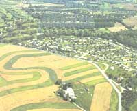

Can neighboring development actually make you broke?.
In 1981, we bought 40 acres on top of a mesa and then ten acres on one side to get a road up. It was classified rural and bad state land on the lower end of the mesa. In 1993 and 1994, we bought three other parcels around the rocky face of the mesa, for a total of 120 acres. The population of the area has been increasing rapidly and recently a nationwide land developer bought a 6,500 acre ranch to the west and has been selling it as high priced ranchos. As a result, our property valuation for tax purposes just increased 400% in one year. The land we purchased is the rocky side of the mesa, which is not suitable for building. Also, there is no water (three dry wells), no electricity, and a very poor jeep road.
We've heard it is possible to recombine land parcels into a whole and designate it conservation land to stem runaway tax values and preserve it from development. The alternative would force us to sell the land to the developer because we couldn't afford to stay. It is a very special place and deserves to be protected, particularly since it is visible for miles around.
Can you tell us if a conservation area is do-able in Arizona? What would be required and how would we go about it? What might the tax savings be? Thank you very much for this and other great work you are doing.
-Gwendellyn McKnight China Valley, AZ
Your mesa sounds both stark and very beautiful. It is a shame, but whenever land is sold in volume for higher prices, it always drives up the value and consequent land taxes for nearby parcels. Upon checking with the assessor's office in Yavapai County where your land is located, it came to light that unlike some states, Arizona has no conservation-land tax break. However, there is a considerable tax break for land that is used for agricultural purposes. To qualify for this tax rating, the land must be used for legitimate profitable agricultural purposes and not as hobby land or recreation only. Your land might be utilized as grazing land to meet this qualification. Non-desert grazing land may be taxed at $7.56 per acre, and desert land, as yours appears to be, as low as $3.50 per acre, or less. To apply for this tax classification, you must produce livestock or lease your land to a rancher. The production should be consistent with the land. For example, if you lease your land for grazing you need only to lease it for the number of livestock units that the land will support. It is not necessary to overgraze the piece in order to qualify, but the lease must be at fair market value, not simply a nominal amount an attempt to lower the taxes.
For more information call the Yavapai County Assessor satellite office at phone (520) 639-8121. Ask for David "Bo" Boivert. He is the agricultural tax-class expert and he will be able to give you details on applying for the agricultural tax classification. The assessor's office can also tell you if you will receive any benefit by combining you parcels into one pieces. I wish you a happy tax relief. I have spent thousands of dollars, been through three attorneys, read books, researched, asked old timers, etc., about my problem, and no one can give me black-and-white answers. On my property is a 40-foot-wide strip of land designated/or ingress and egress to a parcel of land behind my parcel. A man bought that parcel plus all of the land surrounding my parcel. I do understand that I must keep the easement open because it is on my deed. This is no problem.
The problem is the man thinks he can do anything that he wants to the easement. The easement is a beautiful piece of land with native oak trees. I maintain the easement by trimming the trees and cutting the grass. My attorney said all I have to do is make sure that the man can get from point A to point B. The easement is passable. Since buying the surrounding land, he has developed a mobile home park which increased the traffic on this easement. Now, the easement was only intended to the parcel of land behind mine and not the whole parcel around mine. Is this legal? What responsibilities does this man have to maintain the upkeep of the easement, like laying road base, cutting the grass, etc? Can he cut down trees on the easement that belong to me? Can I put up gates at both ends of the easement? I have a fence that runs down both sides of the easement. His parcel is considered to be commercial and mine is still considered to be rural. I do have horses and livestock on my parcel.
I know I have asked a lot, but if you have information or answers to my questions I would appreciate it. This has been a nightmare ever since I bought this parcel of land.
-John C. Rank Salado, TX
Because easement laws are generally arrived at by each state's legislation and case law, there will be no black-and-white answer forthcoming in this column. But easements do follow the same general pattern in every state. Here is an overview of easements in regards to your particular situation: it sounds as if your attorney is absolutely correct. You may not block the easement against ingress and egress but generally you have no obligation to maintain the easement road in any way. The easement user may cut trees or clear other obstacles, but only if they are blocking the actual ingress and egress. If they are simply somewhere else on the easement and not on the roadbed or so close to it as to be interfering, he does not have the right to cut them. If trees must be cut to allow passage, they belong to the owner of the land, not the easement user. If livestock is roaming freely on a larger parcel with an unfenced easement through it, the easement user(s) must keep the gates closed. In your case the easement is fenced on both sides and to put up gates will probably be considered a nuisance.
What is troubling about your problem is the fact that even though the easement is described as serving one parcel only, the easement user has acquired more land and is accessing it through the easement. This is usually not an acceptable practice with easements even though the new acquisitions may be contiguous land. As you have found, easements are a gray area and each case may hinge on points specific to the situation. Contact a title company, or a busy realty firm that sells a lot of land. Ask them to recommend an attorney who has extensive easement experience. You must deal with it in a timely manner with this type situation or you may lose your right to do so. Best of luck in finding the right attorney and securing your easement burden against wrongful use.
I purchased three acres of land in Indiana on a land sales contract. The transaction was recorded in the county in which the land is located. If I find a buyer who will pay cash above what I am paying, can I sell the land, pay off what I owe, and bank the profit? My friend says I cannot sell the property until I have completely paid for it. I am also told by a sales assistant that I must go through her and not directly through escrow. Is this true? Tell me please, how I would go about selling a piece of land that I am making monthly payments on? Also, if I choose, can I transfer the purchase contract into my sister's name? I would he the beneficiary and would still make the same monthly payment. If possible, please point my nose in the right direction. Thank you.
-Georgia M. Ford
Victorville, CA
You may certainly sell your land for cash and pay off the contract balance at closing. Hopefully, you will even make enough profit to hank some money. However, there are a couple of things to consider when doing so. Read your contract carefully. Is there a pre-payment penalty if you pay off the contract early? If so, you will owe the penalty amount as well as the contract balance at time of closing.
It is unclear what you mean by sales assistant. Does that refer to a realty agent? If so, unless you have a written agreement to do so, you are under no obligation to work through her. If you have listed the property with her, that does commit you to sell through her. If the property is not listed and you find a buyer on your own, you may certainly go directly to an escrow office to close the sale. Title companies often have an escrow department that can handle a closing for you. This is convenient, as you will want to provide a title report and policy to your buyer.
You probably can transfer the contract to your sister and continue to make the payments, or allow a buyer to take over the contract, but you must check the language in your contract. In many cases, you will need the contract holder's permission to do this. Hope you have a smooth sale and a tidy profit.
|
 PHOTO: GRANT HEILMAN If this farmer does his homework, he can arrange to have his land taxed at a significantly lower rate that the land next to him. |
COURTESY OF AMERICAN FARMLAND TRUST (800) 431- 1499 |
|